Animals & Nature
555 no-prep Animals & Nature resources with answer keys: reading comprehension, reading trails, and more – filter by grade.
555 resources
Grade

Garden Bird Anatomy Reading Comprehension Passages | Biology Scavenger Hunt 7-8

Ant Reading Comprehension Passages | Biology Scavenger Hunt 7-8

Muscles Reading Comprehension Passages | Biology Scavenger Hunt 7-8

Inside a Corn Plant Reading Comprehension Passages | Reading Scavenger Hunt 7-8

Lynx Reading Comprehension Passages | Biology Scavenger Hunt 7-8

Voice Box Reading Comprehension Passages | Biology Scavenger Hunt 7-8

Lobster Reading Comprehension Passages | Biology Scavenger Hunt 7-8

Hamster Reading Comprehension Passages | Biology Scavenger Hunt 7-8

Cactus Reading Comprehension Passages | Biology Scavenger Hunt 7-8

The Red Deer Trail Reading Comprehension | Reading & Biology Scavenger Hunt 7-8

Hare Reading Comprehension Passages | Biology Scavenger Hunt 7-8

Shark Reading Comprehension Passages | Biology Scavenger Hunt 7-8

Apple Tree Reading Comprehension Passages | Science Scavenger Hunt 7-8

Animal Cell Reading Comprehension Passages | Biology Scavenger Hunt 7-8

Ant Colony Reading Comprehension Passages | Biology Scavenger Hunt 7-8

Potato Plant Reading Comprehension Passages | Science Scavenger Hunt 5-6

Autumn Leaves Reading Comprehension | Science Scavenger Hunt 3-4

Animal Adaptations Reading Comprehension Passages | Science Scavenger Hunt 3-4

Winter Plants Reading Comprehension Passages | Science Scavenger Hunt 3-4

Grain Field Reading Comprehension Passages | Autumn Scavenger Hunt 3-4

Secrets Beneath Forest Floor Passages | Reading Scavenger Hunt 3-4

Autumn Forest Reading Comprehension Passages | Science Scavenger Hunt 3-4

Christmas Tree Reading Comprehension Passages | Winter Scavenger Hunt 3-4

Paper Making Reading Comprehension Passages | Science Scavenger Hunt 5-6

Apple Cellar Reading Comprehension Passages | Autumn Scavenger Hunt 3-4

Fall & Winter Reading Comprehension Passages | Trees Science Scavenger Hunt

Vertebrates Reading Scavenger Hunt | Animal Groups Science Escape Activity

Animals in Winter Reading Scavenger Hunt | Hibernation Science Escape Activity

Why Fir Trees Keep Their Needles Reading Scavenger Hunt | Trees in Winter

Animal Tracks in the Snow Reading Scavenger Hunt | Winter Escape-Style Reading

Arctic Animals Reading Comprehension BUNDLE | Polar Bears & Huskies

Insects & Owls Reading Comprehension BUNDLE | Cloze & Word Search

Savanna, Rainforest & Ocean Animals Reading Comprehension BUNDLE

Fall Animals Worksheets Bundle | Grades 5-8 | How Wildlife Prepares for Winter

Harvest Vegetables Worksheets Bundle | Grades 5-8 | Fall Reading Passages

Halloween Science Worksheets Bundle | Grades 5-8 | Bats, Spiders & Bones

Fall Worksheets Bundle | Grades 5-8 | Autumn Trees & Animals Reading Passages
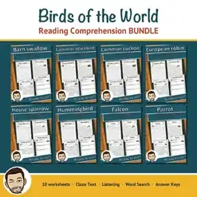
Birds Reading Comprehension BUNDLE | Cloze, Listening & Word Search
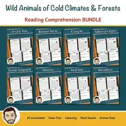
Wild Animals Reading Comprehension BUNDLE | Polar & Forest Animals
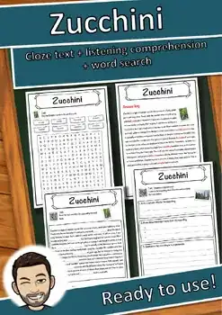
Zucchini – Reading Comprehension: Cloze Text, Listening Task & Word Search
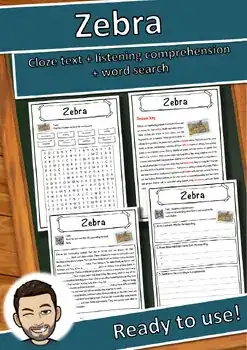
Zebra – Reading Comprehension: Cloze Text, Listening Task & Word Search
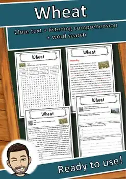
Wheat – Reading Comprehension: Cloze Text, Listening Task & Word Search
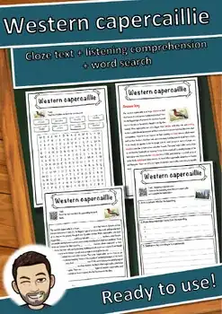
Western capercaillie – Reading Comprehension: Cloze, Listening & Word Search
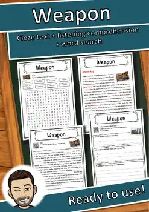
Weapon – Reading Comprehension: Cloze Text, Listening Task & Word Search
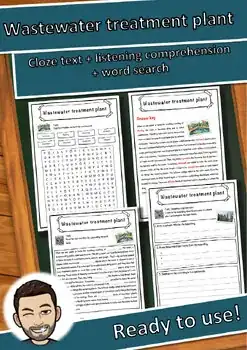
Wastewater treatment plant – Reading Worksheet: Cloze, Listening & Word Search
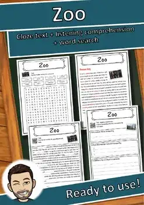
Zoo – Reading Comprehension: Cloze Text, Listening Task & Word Search
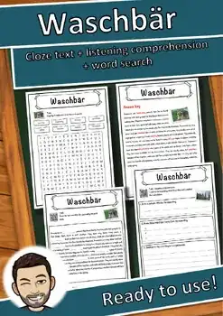
Waschbär – Reading Comprehension: Cloze Text, Listening Task & Word Search
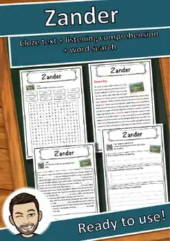
Zander – Reading Comprehension: Cloze Text, Listening Task & Word Search
No resources found – try a different search term or filter.